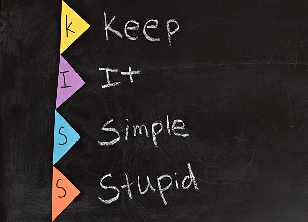

[1] "a" "b" "c" "d" "e" "f" "g" "h" "i" "j" "k" "l" "m" "n" "o" "p" "q" "r" "s"
[20] "t" "u" "v" "w" "x" "y" "z"Introduction
I’ve been using R on a daily basis (literally) precisely for 3 years 3 months 2 weeks 2 days now.
If I were to say anything about the language, it’d be what Gandalf said about Hobbits:
Hobbits are amazing creatures. You can learn all there is to know about their ways in a month, and yet after a hundred years, they can still surprise you.
— Gandalf, LOTR
Problem Statement
About a week ago I needed to subset every second element of a vector. Let me explain.
Take a look at letters:
How do you get the elements “b”, “d”, “f”, “h”, “j”, … ie. values at the indices 2, 4, 6, 8, ...?
Simple enough, right? Right.
What amazed me wasn’t the simplicity of the question at hand, it was how even as a prolific user of R, the building blocks of the language sometimes slip past me so easily.
What I did
Let’s go through my thought process.
seq()
This was definitely the first option that came to mind:
[1] "b" "d" "f" "h" "j" "l" "n" "p" "r" "t" "v" "x" "z"Pretty good, but…
There must be a better solution.
Modulo Operator %%
The modulo operator %% returns the remainder of the division of one number by another.
For example, 4 %% 2 would return 0 since: \[
\frac{4}{2} = 2\;remainder\;0
\] and 9 %% 7 would return 2 since: \[
\frac{9}{7} = 1\;remainder\;2
\]
Back to our problem: I basically want all indices which are divisible by \(2\) ie. Leave a remainder of zero.
[1] "b" "d" "f" "h" "j" "l" "n" "p" "r" "t" "v" "x" "z"That works but… It’s quite obfuscated for such a simple problem.
There’s only one way to know if there’s an easier solution: Google.
Vector recycling
If logical vectors are used for indexing in R, their values are recycled if the index vector is shorter than the vector containing the values.
It is one of my all time favorite features about R. The first time I learnt the concept, it was mind-blowing.
This time round, it swept me off my feet completely.
The solution was as simple as this:
Tell me that isn’t elegant!
That’s one of the best answers on StackOverflow as far as I’m concerned.
Short. In most cases short never equals good performance but this is one of the few cases where what’s advertised is what’s delivered.
Simple. It’s very easy to understand. Straightforward.
Clean. It’s not obfuscated.
It’s better in every way compared to my initial trials. It was posted by the user Sven Hohenstein. Link to the answer.
Generalization
Now that we have the best solution (as far as we know), let’s generalize it.
\(i^{th}\) element
What if you wanted to subset every 9th element? Repeat TRUE & FALSE the required number of times:
We repeat FALSE \(8\) times because we want every \(9\)th index to be retrieved.
Taking \(9\) as our i:
\((i + n)^{th}\) element
Extending the above logic, let’s assume i is \(9\) and n is \(10\). So it’s like saying we want to subset every \((9 + 10)^{th} = 19^{th}\) element.
Conclusion

Till next time, avoid complicating stuff.